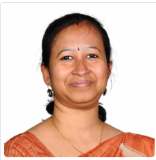

BMSCE
Fostering Innovation, Discovery, and Technological Excellence

Head, R & D
The Research & Development Centre at BMSCE is the primary catalyst for identifying emerging research frontiers and developing high-impact projects. Led by Dr. Chandasree Das, the centre orchestrates a vibrant ecosystem where faculty and students collaborate to push the boundaries of National and International scientific inquiry.
Established at the institutional level to promote deep-tech innovation, the centre serves as a critical liaison between regulatory universities and the diverse research clusters at BMSCE. From patent filing to facilitating international peer-reviewed publications, the R&D Centre ensures every scientific outcome is nurtured towards global recognition.
Since obtaining academic autonomy, BMSCE has pioneered a curriculum that foregrounds research from the very first year. Our Propel Labs are centralized, multidisciplinary design centers where students of all disciplines work on engineering prototypes without barriers.
Broad-based facilities not confined to a single discipline, encouraging cross-pollination of ideas across departments.
From conceptual design to functional engineering prototypes, students are mentored to build products for global competitions.
Headed by expert faculty and supported by technical staff who volunteer as mentors to guide creative thinking.
| Sl. No | Research Center (Year of estb.) | No. of Guides | Ph.D Registered | Ph.D Awarded | M.Sc Awarded |
|---|---|---|---|---|---|
| 1 | Civil Engineering (2002) | 24 | 64 | 33 | 14 |
| 2 | Mechanical Engineering (2002) | 34 | 34 | 34 | 2 |
| 3 | Electrical and Electronics Engineering (2002) | 15 | 27 | 13 | 0 |
| 4 | Electronics and Communication Engineering (2002) | 24 | 69 | 22 | 1 |
| 5 | Industrial Engineering and Management (2002) | 3 | 8 | 3 | 2 |
| 6 | Chemical Engineering (2004) | 5 | 4 | 4 | 1 |
| 7 | Mathematics (2004) | 11 | 18 | 5 | 0 |
| 8 | MBA (2004) | 8 | 25 | 19 | 0 |
| 9 | Biotechnology (2009) | 6 | 4 | 5 | 2 |
| 10 | Computer Science and Engineering (2010) | 13 | 34 | 20 | 0 |
| 11 | Information Science and Engineering (2011) | 9 | 22 | 6 | 0 |
| 12 | Physics (2011) | 6 | 7 | 4 | 0 |
| 13 | Chemistry (2011) | 8 | 10 | 7 | 0 |
| 14 | Electronics & Telecommunication Engineering (2013) | 6 | 9 | 1 | 0 |
| TOTAL | 172 | 335 | 176 | 22 |